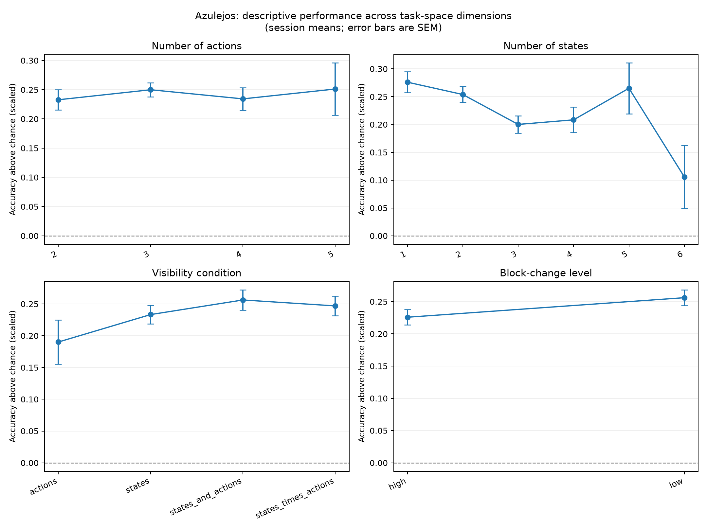

1. Executive summary
The Azulejos dataset records how people learn across a large space of reinforcement-learning bandit tasks. Our preliminary analysis suggests that participants learn reliably, but tasks involving uncertain or changing reward probabilities are especially difficult.
The project tests where a simple, interpretable account of learning is sufficient and where a flexible recurrent model adds genuine predictive value. The goal is not merely to find the lowest loss, but to identify the simplest model that still explains and predicts human behaviour.
2. Dataset and analysis sample
The public data were downloaded from the Azulejos OSF project. Training session 0 was excluded, and formal choice trials were identified using trial_epoch = learn_choice. One legacy-format CSV was excluded from this initial analysis because it does not contain the current schema.
What is recorded on each choice trial?
| Variable | Meaning | Modeling role |
|---|---|---|
state | The context shown on the current trial | Defines which action may be best |
arm_chosen | The participant's selected option | The choice the model must predict |
points_won | The obtained reward | Generates prediction errors and learning |
arm_outcomes | Recorded outcomes for the available options | Used to infer the best arm descriptively |
| Task features | Actions, states, visibility, probability and point dynamics | Define regions of the task space |
3. Preliminary findings

4. Research question and hypotheses
Primary research question
Specific version
Do humans adapt differently to changes in reward probability than to changes in reward magnitude or state structure?
5. Models to compare
Updates the value of the chosen action from the reward prediction error.
Qₜ₊₁(Aₜ) = Qₜ(Aₜ) + αδₜ
Interpretation: α is learning speed; β controls how consistently the higher-valued option is chosen.
Allows values of unchosen or old options to decay toward a baseline.
Question: Do people lose access to values that have not been refreshed recently?
Adds a tendency to repeat the previous choice independently of learned value.
Question: Is staying caused by high expected value, or simply by choice inertia?
Allows α to increase when outcomes suggest that the environment has changed and decrease when the environment seems stable.
Question: Can change-sensitive updating explain behaviour in reversal, probability-switch, and drifting tasks?
Learns a flexible mapping from action–reward history to the next choice using an internal hidden state rather than a hand-written learning rule.
Role: It provides a high-capacity predictive benchmark, but its mechanism is harder to interpret.
6. Proposed analysis
Primary evaluation metrics
| Metric | Purpose | Better value |
|---|---|---|
| Held-out NLL | Probability assigned to observed choices in unseen sessions | Lower |
| Pseudo-R² | Improvement over a random-choice model | Higher |
| Accuracy / calibration | Whether predicted choice probabilities agree with observed frequencies | Higher / better aligned |
| ΔNLL: RW − GRU | Where flexible recurrence adds predictive value | Larger means GRU advantage |
7. How to interpret possible results
| Possible result | Scientific interpretation |
|---|---|
| Standard RW matches GRU in stable tasks | Simple prediction-error learning may be sufficient when contingencies are stationary. |
| Adaptive RW closes the GRU gap in changing tasks | Much of the recurrent advantage may be explained by change-sensitive learning rates. |
| Perseveration improves prediction broadly | Choice repetition reflects inertia as well as learned value. |
| GRU remains clearly better in volatile tasks | Human choices may depend on longer history, nonlinear interactions, or latent beliefs not captured by the interpretable models. |
| GRU wins only on training data | The network is likely overfitting rather than discovering general behavioural structure. |
Recommended final figure set
- Human learning curves by task-change type.
- Held-out NLL for each model and change type.
- GRU advantage over RW:
ΔNLL = NLL(RW) − NLL(GRU). - Parameter estimates for learning rate, perseveration, and forgetting across task conditions.
- Calibration curves comparing predicted and observed choice probabilities.
8. Limitations and next steps
- Confounding: task dimensions are not fully independent; descriptive condition means should not be interpreted causally.
- Dynamic optimum: the current descriptive “best action” averages recorded outcomes within each session and state. Drifting tasks need a trial-level expected-value or change-point analysis.
- Model fairness: models must use the same held-out split and comparable information; parameter count alone does not make train-set AIC/BIC a fair neural-model comparison.
- Participant structure: repeated task sessions from the same person must remain together during evaluation.
Immediate next step
Implement a leakage-safe participant-level split and fit three first-line models—standard RW, RW with perseveration, and GRU—before adding forgetting and adaptive learning. This gives a clean baseline comparison and shows where additional complexity is justified.
Short spoken summary for the teacher
Our preliminary analysis suggests that participants learned across trials, but changes in reward probability were particularly difficult. We want to test whether standard and adaptive reinforcement-learning models can explain this difficulty, and whether a GRU provides additional predictive value on held-out choices. The key question is not simply which model fits best, but where flexible recurrence adds information beyond interpretable cognitive mechanisms.